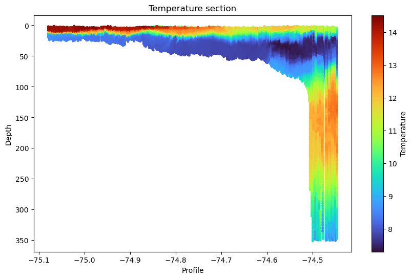
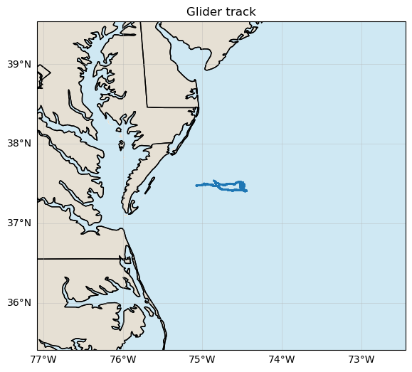
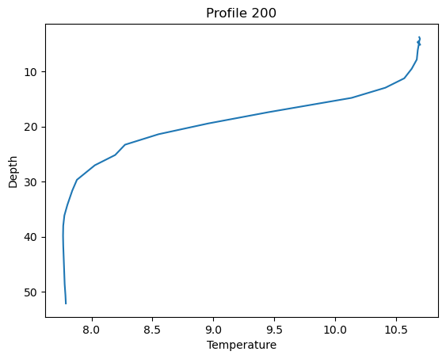

# make sure we have at least 3.1.1
# On JupyterHub run pip install --upgrade erddapy
# and restart kernel
import erddapy
erddapy.__version__'3.1.1'
ERDDAP provides two data access modes: griddap for multidimensional gridded datasets that can be sliced by dimensions (e.g., time, latitude, longitude), and tabledap for tabular datasets that are queried by filtering rows (e.g., observations or profiles).
The new erddapy release provides a erdappy engine which helps us open tabledap urls in a nicer way.
# make sure we have at least 3.1.1
# On JupyterHub run pip install --upgrade erddapy
# and restart kernel
import erddapy
erddapy.__version__'3.1.1'import xarray as xr
xr.backends.list_engines(){'netcdf4': <NetCDF4BackendEntrypoint>
Open netCDF (.nc, .nc4 and .cdf) and most HDF5 files using netCDF4 in Xarray
Learn more at https://docs.xarray.dev/en/stable/generated/xarray.backends.NetCDF4BackendEntrypoint.html,
'h5netcdf': <H5netcdfBackendEntrypoint>
Open netCDF (.nc, .nc4 and .cdf) and most HDF5 files using h5netcdf in Xarray
Learn more at https://docs.xarray.dev/en/stable/generated/xarray.backends.H5netcdfBackendEntrypoint.html,
'scipy': <ScipyBackendEntrypoint>
Open netCDF files (.nc, .cdf and .nc.gz) using scipy in Xarray
Learn more at https://docs.xarray.dev/en/stable/generated/xarray.backends.ScipyBackendEntrypoint.html,
'erddapy': <ERDDAPyBackendEntrypoint>
Load ERDDAP URLs in xarray.,
'gmt': <GMTBackendEntrypoint>
Open raster (.grd, .nc or .tif) files in Xarray via GMT.
Learn more at https://pygmt.org/dev/api/generated/pygmt.GMTBackendEntrypoint.html,
'h5coro': <H5CoroBackendEntrypoint>
Support for reading HDF5 files in S3 from H5Coro in xarray,
'kerchunk': <KerchunkBackend>
Open Kerchunk References with Xarray
Learn more at https://fsspec.github.io/kerchunk/,
'pydap': <PydapBackendEntrypoint>
Open remote datasets via OPeNDAP using pydap in Xarray
Learn more at https://docs.xarray.dev/en/stable/generated/xarray.backends.PydapBackendEntrypoint.html,
'rasterio': <RasterioBackend>,
'store': <StoreBackendEntrypoint>
Open AbstractDataStore instances in Xarray
Learn more at https://docs.xarray.dev/en/stable/generated/xarray.backends.StoreBackendEntrypoint.html,
'zarr': <ZarrBackendEntrypoint>
Open zarr files (.zarr) using zarr in Xarray
Learn more at https://docs.xarray.dev/en/stable/generated/xarray.backends.ZarrBackendEntrypoint.html}import xarray as xr
#from erddapy import ERDDAP
url = "https://gliders.ioos.us/erddap/tabledap/amelia-20180501T0000"
#url = "https://coastwatch.pfeg.noaa.gov/erddap/tabledap/erdCalCOFIeggcnt"
#xr.open_dataset(url, engine="erddapy")
xr.open_dataset(url)<xarray.Dataset> Size: 643kB
Dimensions: (s: 1397)
Dimensions without coordinates: s
Data variables: (12/73)
s.trajectory (s) |S64 89kB ...
s.wmo_id (s) |S64 89kB ...
s.profile_id (s) float64 11kB ...
s.time (s) datetime64[ns] 11kB ...
s.latitude (s) float64 11kB ...
s.longitude (s) float64 11kB ...
... ...
s.time_uv (s) datetime64[ns] 11kB ...
s.time_uv_qc (s) float32 6kB ...
s.u (s) float64 11kB ...
s.u_qc (s) float32 6kB ...
s.v (s) float64 11kB ...
s.v_qc (s) float32 6kB ...
Attributes: (12/56)
acknowledgment: This deployment supported by Heising-Simon...
cdm_data_type: TrajectoryProfile
cdm_profile_variables: time_uv,lat_uv,lon_uv,u,v,profile_id,time,...
cdm_trajectory_variables: trajectory,wmo_id
contributor_name: Donglai Gong, Jeanna Hudson, Lydia Bienlie...
contributor_role: Principal Investigator, Glider Pilot, Glid...
... ...
subsetVariables: wmo_id,trajectory,profile_id,time,latitude...
summary: This is a test mission for the Northwest P...
time_coverage_end: 2018-05-14T12:29:12Z
time_coverage_start: 2018-05-01T14:58:48Z
title: amelia-20180501T0000
Westernmost_Easting: -75.07957909499224import xarray as xr
from erddapy import ERDDAP
url = "https://gliders.ioos.us/erddap/tabledap/amelia-20180501T0000"
# url = "https://coastwatch.pfeg.noaa.gov/erddap/tabledap/erdCalCOFIeggcnt"
xr.open_dataset(url, engine="erddapy")<xarray.Dataset> Size: 643kB
Dimensions: (s: 1397)
Dimensions without coordinates: s
Data variables: (12/73)
s.trajectory (s) |S64 89kB ...
s.wmo_id (s) |S64 89kB ...
s.profile_id (s) float64 11kB ...
s.time (s) datetime64[ns] 11kB ...
s.latitude (s) float64 11kB ...
s.longitude (s) float64 11kB ...
... ...
s.time_uv (s) datetime64[ns] 11kB ...
s.time_uv_qc (s) float32 6kB ...
s.u (s) float64 11kB ...
s.u_qc (s) float32 6kB ...
s.v (s) float64 11kB ...
s.v_qc (s) float32 6kB ...
Attributes: (12/56)
acknowledgment: This deployment supported by Heising-Simon...
cdm_data_type: TrajectoryProfile
cdm_profile_variables: time_uv,lat_uv,lon_uv,u,v,profile_id,time,...
cdm_trajectory_variables: trajectory,wmo_id
contributor_name: Donglai Gong, Jeanna Hudson, Lydia Bienlie...
contributor_role: Principal Investigator, Glider Pilot, Glid...
... ...
subsetVariables: wmo_id,trajectory,profile_id,time,latitude...
summary: This is a test mission for the Northwest P...
time_coverage_end: 2018-05-14T12:29:12Z
time_coverage_start: 2018-05-01T14:58:48Z
title: amelia-20180501T0000
Westernmost_Easting: -75.07957909499224url = "https://coastwatch.pfeg.noaa.gov/erddap/tabledap/erdCalCOFIeggcnt"
xr.open_dataset(url, engine="erddapy")<xarray.Dataset> Size: 48MB
Dimensions: (s: 93502)
Dimensions without coordinates: s
Data variables: (12/22)
s.cruise (s) |S64 6MB ...
s.ship (s) |S64 6MB ...
s.ship_code (s) |S64 6MB ...
s.order_occupied (s) int32 374kB ...
s.tow_type (s) |S64 6MB ...
s.tow_number (s) int32 374kB ...
... ...
s.common_name (s) |S64 6MB ...
s.itis_tsn (s) int32 374kB ...
s.calcofi_species_code (s) int32 374kB ...
s.egg_count (s) int32 374kB ...
s.eggs_10m2 (s) float32 374kB ...
s.eggs_100m3 (s) float32 374kB ...
Attributes: (12/26)
cdm_data_type: Other
Conventions: COARDS, CF-1.6, ACDD-1.3, NCCSV-1.2
defaultGraphQuery: longitude,latitude,egg_count&cruise="202301"&....
Easternmost_Easting: -77.22833
geospatial_lat_max: 53.27666
geospatial_lat_min: 0.001666
... ...
subsetVariables: cruise, station, line, tow_type, tow_number,ne...
summary: Fish egg counts and standardized counts for eg...
time_coverage_end: 2023-01-25T18:45:00Z
time_coverage_start: 1951-01-09T18:16:00Z
title: CalCOFI NOAA Fish Egg Counts
Westernmost_Easting: -179.8217url = "https://gliders.ioos.us/erddap/tabledap/amelia-20180501T0000.ncCFMA"
ds = xr.open_dataset(url, engine="erddapy")<xarray.Dataset> Size: 101MB
Dimensions: (trajectory: 1, profile: 1397,
obs: 279)
Coordinates:
* trajectory (trajectory) object 8B 'amelia-2...
time (trajectory, profile) datetime64[ns] 11kB ...
latitude (trajectory, profile) float64 11kB ...
longitude (trajectory, profile) float64 11kB ...
lat_uv (trajectory, profile) float64 11kB ...
lon_uv (trajectory, profile) float64 11kB ...
time_uv (trajectory, profile) datetime64[ns] 11kB ...
depth (trajectory, profile, obs) float32 2MB ...
Dimensions without coordinates: profile, obs
Data variables: (12/65)
wmo_id (trajectory) object 8B ...
profile_id (trajectory, profile) float64 11kB ...
u (trajectory, profile) float64 11kB ...
v (trajectory, profile) float64 11kB ...
conductivity (trajectory, profile, obs) float32 2MB ...
conductivity_qc (trajectory, profile, obs) float32 2MB ...
... ...
temperature (trajectory, profile, obs) float32 2MB ...
temperature_qc (trajectory, profile, obs) float32 2MB ...
time_qc (trajectory, profile, obs) float32 2MB ...
time_uv_qc (trajectory, profile, obs) float32 2MB ...
u_qc (trajectory, profile, obs) float32 2MB ...
v_qc (trajectory, profile, obs) float32 2MB ...
Attributes: (12/56)
acknowledgment: This deployment supported by Heising-Simon...
cdm_data_type: TrajectoryProfile
cdm_profile_variables: time_uv,lat_uv,lon_uv,u,v,profile_id,time,...
cdm_trajectory_variables: trajectory,wmo_id
contributor_name: Donglai Gong, Jeanna Hudson, Lydia Bienlie...
contributor_role: Principal Investigator, Glider Pilot, Glid...
... ...
subsetVariables: wmo_id,trajectory,profile_id,time,latitude...
summary: This is a test mission for the Northwest P...
time_coverage_end: 2018-05-14T12:29:12Z
time_coverage_start: 2018-05-01T14:58:48Z
title: amelia-20180501T0000
Westernmost_Easting: -75.07957909499224import xarray as xr
url = "https://gliders.ioos.us/erddap/tabledap/amelia-20180501T0000.ncCFMA"
ds = xr.open_dataset(url, engine="erddapy")
print(ds)<xarray.Dataset> Size: 101MB
Dimensions: (trajectory: 1, profile: 1397,
obs: 279)
Coordinates:
* trajectory (trajectory) object 8B 'amelia-2...
time (trajectory, profile) datetime64[ns] 11kB ...
latitude (trajectory, profile) float64 11kB ...
longitude (trajectory, profile) float64 11kB ...
lat_uv (trajectory, profile) float64 11kB ...
lon_uv (trajectory, profile) float64 11kB ...
time_uv (trajectory, profile) datetime64[ns] 11kB ...
depth (trajectory, profile, obs) float32 2MB ...
Dimensions without coordinates: profile, obs
Data variables: (12/65)
wmo_id (trajectory) object 8B ...
profile_id (trajectory, profile) float64 11kB ...
u (trajectory, profile) float64 11kB ...
v (trajectory, profile) float64 11kB ...
conductivity (trajectory, profile, obs) float32 2MB ...
conductivity_qc (trajectory, profile, obs) float32 2MB ...
... ...
temperature (trajectory, profile, obs) float32 2MB ...
temperature_qc (trajectory, profile, obs) float32 2MB ...
time_qc (trajectory, profile, obs) float32 2MB ...
time_uv_qc (trajectory, profile, obs) float32 2MB ...
u_qc (trajectory, profile, obs) float32 2MB ...
v_qc (trajectory, profile, obs) float32 2MB ...
Attributes: (12/56)
acknowledgment: This deployment supported by Heising-Simon...
cdm_data_type: TrajectoryProfile
cdm_profile_variables: time_uv,lat_uv,lon_uv,u,v,profile_id,time,...
cdm_trajectory_variables: trajectory,wmo_id
contributor_name: Donglai Gong, Jeanna Hudson, Lydia Bienlie...
contributor_role: Principal Investigator, Glider Pilot, Glid...
... ...
subsetVariables: wmo_id,trajectory,profile_id,time,latitude...
summary: This is a test mission for the Northwest P...
time_coverage_end: 2018-05-14T12:29:12Z
time_coverage_start: 2018-05-01T14:58:48Z
title: amelia-20180501T0000
Westernmost_Easting: -75.07957909499224da = ds.temperature.isel(trajectory=0)
plt.figure(figsize=(10, 6))
plt.scatter(
ds.longitude.broadcast_like(da),
ds.depth.isel(trajectory=0),
c=da,
s=5,
cmap="turbo"
)
plt.gca().invert_yaxis()
plt.xlabel("Profile")
plt.ylabel("Depth")
plt.title("Temperature section")
plt.colorbar(label="Temperature")
plt.show()
da<xarray.DataArray 'temperature' (profile: 1397, obs: 258)> Size: 1MB
array([[8.0939, 8.108 , 8.321 , ..., nan, nan, nan],
[8.4498, 9.2764, 9.4987, ..., nan, nan, nan],
[9.6915, 9.7053, 9.7546, ..., nan, nan, nan],
...,
[8.6176, 8.6306, 8.6348, ..., nan, nan, nan],
[8.6349, 8.6356, 8.6499, ..., nan, nan, nan],
[8.639 , 8.6735, 9.4113, ..., nan, nan, nan]],
shape=(1397, 258), dtype=float32)
Coordinates:
trajectory <U20 80B 'amelia-20180501T0000'
time (profile) datetime64[ns] 11kB ...
latitude (profile) float64 11kB ...
longitude (profile) float64 11kB ...
lat_uv (profile) float64 11kB ...
lon_uv (profile) float64 11kB ...
time_uv (profile) datetime64[ns] 11kB ...
depth (profile, obs) float32 1MB ...
Dimensions without coordinates: profile, obs
Attributes: (12/14)
_ChunkSizes: 10
actual_range: [ 7.2979 14.5184]
ancillary_variables: qartod_temperature_climatological_flag qartod_tempe...
colorBarMaximum: 32.0
colorBarMinimum: 0.0
instrument: instrument_ctd
... ...
observation_type: measured
platform: platform
standard_name: sea_water_temperature
units: Celsius
valid_max: 40.0
valid_min: -5.0ds.temperature.isel(trajectory=0)<xarray.DataArray 'temperature' (profile: 1397, obs: 279)> Size: 2MB
array([[8.0939, 8.108 , 8.321 , ..., nan, nan, nan],
[8.4498, 9.2764, 9.4987, ..., nan, nan, nan],
[9.6915, 9.7053, 9.7546, ..., nan, nan, nan],
...,
[8.6176, 8.6306, 8.6348, ..., nan, nan, nan],
[8.6349, 8.6356, 8.6499, ..., nan, nan, nan],
[8.639 , 8.6735, 9.4113, ..., nan, nan, nan]],
shape=(1397, 279), dtype=float32)
Coordinates:
trajectory <U20 80B 'amelia-20180501T0000'
time (profile) datetime64[ns] 11kB ...
latitude (profile) float64 11kB ...
longitude (profile) float64 11kB ...
lat_uv (profile) float64 11kB ...
lon_uv (profile) float64 11kB ...
time_uv (profile) datetime64[ns] 11kB ...
depth (profile, obs) float32 2MB ...
Dimensions without coordinates: profile, obs
Attributes: (12/14)
_ChunkSizes: 10
actual_range: [ 7.2979 14.5184]
ancillary_variables: qartod_temperature_climatological_flag qartod_tempe...
colorBarMaximum: 32.0
colorBarMinimum: 0.0
instrument: instrument_ctd
... ...
observation_type: measured
platform: platform
standard_name: sea_water_temperature
units: Celsius
valid_max: 40.0
valid_min: -5.0import matplotlib.pyplot as plt
import cartopy.crs as ccrs
import cartopy.feature as cfeature
lon = ds.longitude.isel(trajectory=0)
lat = ds.latitude.isel(trajectory=0)
fig = plt.figure(figsize=(8, 6))
ax = plt.axes(projection=ccrs.PlateCarree())
# Set map extent around the track
ax.set_extent([
float(lon.min()) - 2,
float(lon.max()) + 2,
float(lat.min()) - 2,
float(lat.max()) + 2,
])
# Add coastline and land
ax.add_feature(cfeature.LAND, facecolor="#e6e0d4")
ax.add_feature(cfeature.OCEAN, facecolor="#cfe8f3")
ax.add_feature(cfeature.COASTLINE)
ax.add_feature(cfeature.STATES)
# Optional gridlines
gl = ax.gridlines(draw_labels=True, linewidth=0.5, alpha=0.5)
gl.top_labels = False
gl.right_labels = False
# Plot track
ax.plot(
lon,
lat,
marker=".",
markersize=2,
transform=ccrs.PlateCarree(),
)
plt.title("Glider track")
plt.show()
p = 200
plt.plot(
ds.temperature.isel(trajectory=0, profile=p),
ds.depth.isel(trajectory=0, profile=p)
)
plt.gca().invert_yaxis()
plt.xlabel("Temperature")
plt.ylabel("Depth")
plt.title(f"Profile {p}")
plt.show()